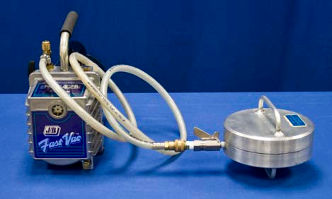
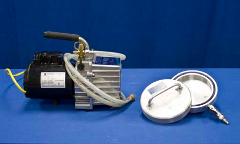
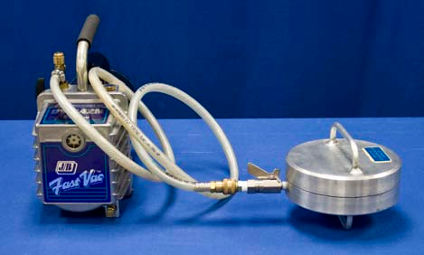
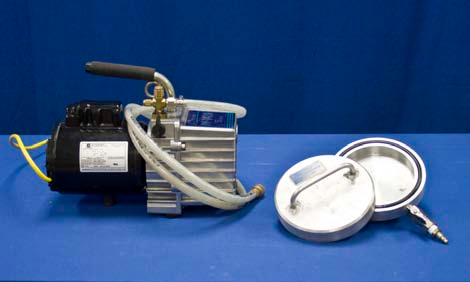

Concept
In our version of the famous 1650 public demonstration, we replace hemispheres with disks, which makes the relevant surface area more obvious. Once evacuated, the force exerted on the disks by the atmosphere can be estimated by:
$$F = PA$$
Here $F =$ force, $P =$ atmospheric pressure, and $A = \pi R^2$. An estimate of $F$ is thus $F = \left(14.7 \text{lbs / in}^2\right)\left(\pi 3^2 \text{in}^2 \right) = 415$ lbs. Note that this exceeds the pulling force that typical students can supply, and that the force exerted, whether by a single person or two people, is only the maximum force one person can supply to one of the disks. A historical account can be found at
Procedure
- Verify that the valve on the Magdeburg hemispheres is in the open position (rotated fully counter-clockwise).
- Holding the stem of the vacuum pump’s hose valve in one hand and the Magdeburg hemisphere’s in the other, forcefully push the valves together until you hear a click.
- Press the two hemispheres together and turn on the vacuum pump using the toggle switch located on the back of the pump near the power cable.
- After about 5 seconds, turn off the vacuum pump and close the valve on the Magdeburg hemispheres.
- Hold the end of the hose valve and push it towards the Magdeburg hemisphere valve until it clicks and disconnects.
- Demonstrate that the Magdeburg hemispheres cannot be pulled apart. If you choose to have two people pulling against each other, recruit spotters to stand behind both of them in case they fall.
- Open the valve on the Magdeburg hemispheres and allow them to just fall apart.
Equipment
- Vacuum Pump
- Magdeburg Hemispheres